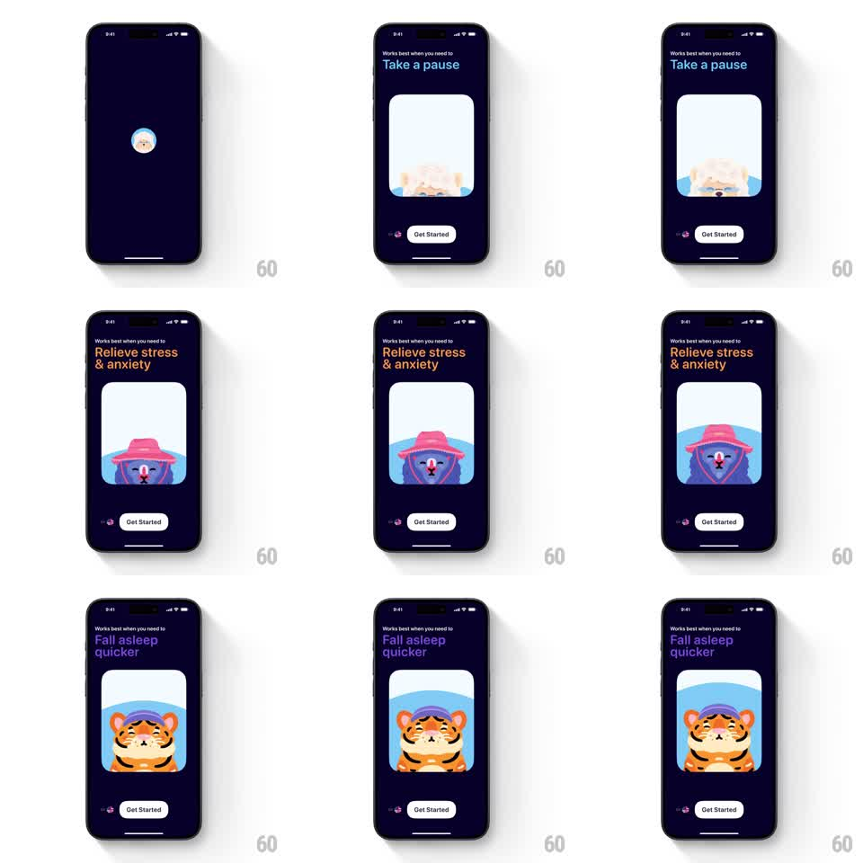

Media
Frame-by-frame

Rebuild this animation 1:1: Mindllama's onboarding carousel - auto-advancing pages where a colored benefit headline swaps above a rounded card of breathing mascot illustrations, with a persistent Get Started button.

Rebuild this animation 1:1: Mindllama's onboarding carousel - auto-advancing pages where a colored benefit headline swaps above a rounded card of breathing mascot illustrations, with a persistent Get Started button. ## Integration Integration: stack-agnostic spec - springs given as stiffness/damping, timed motions as duration + curve; map every value to your framework and animation library of choice. ## Scene Dark navy screen. Center-top: small gray label "Works best when you need to" above a large colored headline that changes per page - "Take a pause" (blue), "Relieve stress & anxiety" (orange), "Fall asleep quicker" (purple). Below: a large rounded-square card holding that page's mascot illustration (peeking llama, purple bear in a pink hat, sleepy tiger). Bottom: page dots and a white "Get Started" pill. ## Motion spec Pattern: auto-advancing benefit carousel with breathing mascots. - Each page auto-advances after ~2.5s: the illustration card slides horizontally (300ms, ease-out) while the headline crossfades with a slight rise (translateY 8px to 0, 250ms), headline color swapping with the page. - Inside each card, the mascot breathes: a slow scale 1.0 to 1.05 loop (~3s, ease-in-out) with a gentle rise, independent of the carousel timing. - Page dots update with the active dot elongating into a pill (200ms). - The Get Started button and top label stay fixed through every transition. - Swiping manually takes over the same transition 1:1 and resets the auto-advance timer. ## Calibration - The mascot breathing loop must not restart on each carousel advance - keep it running so pages feel alive, not reset. - Headline color is per-page and saturated against the navy; keep contrast up. ## Reduced motion Pages crossfade without slide; mascots static. ## Don't miss - The illustration card keeps its rounded corners and position on every page - only the artwork and headline change. - The llama avatar in the very first frame (centered circle on empty navy) is the entry state before the carousel builds.